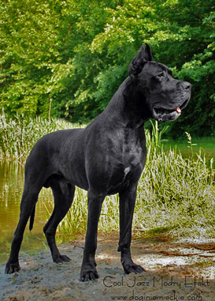
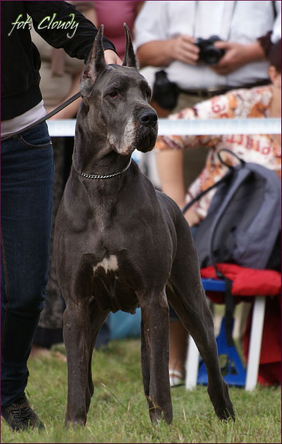
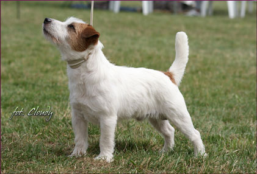
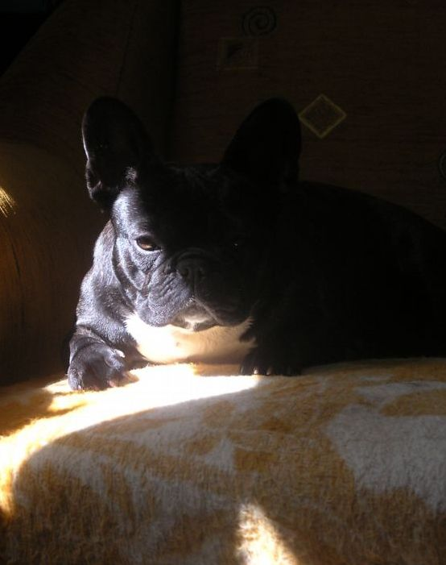
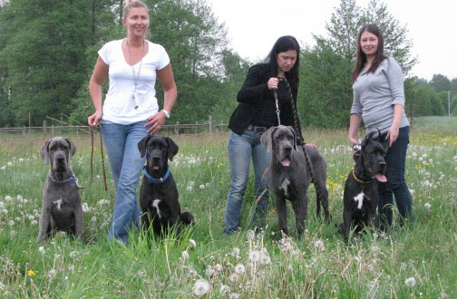
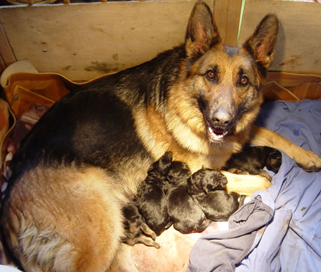

In the middle of January we are expecting blue and black puppies after COOL JAZZ Modry Efekt i OH MY DARLING Balao


 09.11.2008 - DSecond day, almost one year old MICHELLE MA BELLE Balao finished Polish Junior
Championship and also become Polish Junior Winner 2008. Blue LIFESTYLE Balao was the best puppie.
09.11.2008 - DSecond day, almost one year old MICHELLE MA BELLE Balao finished Polish Junior
Championship and also become Polish Junior Winner 2008. Blue LIFESTYLE Balao was the best puppie.08.11.2008 - International dog show in Poznan FOR PLEASURE of the Hunters Pride - CAC, CACIB
05.10.2008 - Danubius Club Show
JASMIN Medium - BIS Veteran and ... BEST IN SHOW. What can I say more. She was the best !!!

04.10. 2008 - Next day, veteran JASMIN Medium become - European Veteran Winner 2008. Michelle was excellent 5/16
03.10.2008 - European dog show in Budapeszt. First day terriers were showed. All our dogs were excellent. Inferno was 4th on his class.

14.09.2008 - £ódŸ - Club dog show JASMIN Medium BIS Weteran !!The same day in Warszawa was Terrier Club show. Our kennel was represent by Gumiœ who won his class and Inferno who gaind title club junior winner and best junior. My huge congratulation for Krzysztof and his familly.

31.08.2008 - International dog show in Bia³ymstoku, Forpie was the best again - CAC, CACIB, BOB. 24.08.2008 - National dog show in Radom. Jasmin Medium - gained title best
veteran and her granddoughter Michelle Ma Belle Balao had excellent
debut in junior class she was the best junior but also best of breed.
24.08.2008 - National dog show in Radom. Jasmin Medium - gained title best
veteran and her granddoughter Michelle Ma Belle Balao had excellent
debut in junior class she was the best junior but also best of breed.Jack Russell's also had very good day. Prertorium I'M CEEANNE - was the best puppy and FOR PLEASURE of the Hunters Pride gained another BOB title.

22.08.2008 - Magic person arrived to our place ;)I was thinking about french bulldog since few years but till this day I coudn't deciced.
Mafia is living with Magda and Michelle.
02.08.2008 - Goro had passed away. He is now running happy with her friend Belka under the rainbow bridge...
 20.07.2008 - JAGA BABA's pups were born few days latter. We decided that it is the
last Heksa's litter.
20.07.2008 - JAGA BABA's pups were born few days latter. We decided that it is the
last Heksa's litter.
 15.07.2008 - YACUZA i FLASH JACK are parents of litter "M" Balao. This time Yacuza
delivered 4 lovely males and 3 females.
15.07.2008 - YACUZA i FLASH JACK are parents of litter "M" Balao. This time Yacuza
delivered 4 lovely males and 3 females.
 12.07.2008 - International dog show in Warszawa. 8 years old JASMIN Medium was Best
Veteran, black MICHELLE MA BELLE Balao was the best puppie.
12.07.2008 - International dog show in Warszawa. 8 years old JASMIN Medium was Best
Veteran, black MICHELLE MA BELLE Balao was the best puppie.INFERNO finished Polish Junior Championship, GUMMIE BEAR - CAC.
29.06.2008 - International DOG SHOW in Kraków. Pretorium I'M CEEANNE was the best puppie; GUMMIE BEAR - CWC i Res. CACIB.
 07.06.2008 - Speciality Great Danes show in Finland.
07.06.2008 - Speciality Great Danes show in Finland.MOONSHINE Balao - BIS Puppy
MADNESS BLACK Balao - II BIS Puppy
 04.06.2008 - Pretorium I'M CEEANNE cames from Australia. Thank you very much for
this lovely girl.
04.06.2008 - Pretorium I'M CEEANNE cames from Australia. Thank you very much for
this lovely girl.
 27.05.2008 - We were waiting two years and finally got Interchampionship diploma - FOR PLEASURE of the Hunters Pride
our sixth Interchampion but first Jack Russell in this titule.
27.05.2008 - We were waiting two years and finally got Interchampionship diploma - FOR PLEASURE of the Hunters Pride
our sixth Interchampion but first Jack Russell in this titule.
 25.05.2008 - National dog show in Radom. MICHELLE MA BELLE
Balao first time on the show and marvelous result - II BIS puppy !! Bravo Magda !
25.05.2008 - National dog show in Radom. MICHELLE MA BELLE
Balao first time on the show and marvelous result - II BIS puppy !! Bravo Magda !Jack Russell's also had lucky day:
INFERNO Balao - Junior Winner & BOB
FLASH JACK Balao - CWC, BOS
GUMMIE BEAR Balao - CWC

18.05.2008 - "M" MeetingMETALLICA, MISSION IMPOSSIBLE, MOONLIGHT SHADOW, MICHELLE MA BELLE
 11.05.2008 - National dog show in P³ock. INFERNO - Best Junior and BOB, FLASH JACK
- CAC, BOS
11.05.2008 - National dog show in P³ock. INFERNO - Best Junior and BOB, FLASH JACK
- CAC, BOS
 09.05.2008 - Two hours latter first Whoopie's daughter was born. In litter
"L" is only one male and 4 females. The father is also FOR PLEASURE of the Hunters
Pride
09.05.2008 - Two hours latter first Whoopie's daughter was born. In litter
"L" is only one male and 4 females. The father is also FOR PLEASURE of the Hunters
Pride
 08.05.2008 - Litter "K" was born. Pups have the same pedigree as our litter "F". We
hope that also will be so nice.
08.05.2008 - Litter "K" was born. Pups have the same pedigree as our litter "F". We
hope that also will be so nice.
26.04. & 03.05. Two international dog shows in Opole and in £ódŸ. FLASH JACK won his class and got CAC.
 17.04.2008 - Katiusza has delivered nine puppies. Only one male and eight females.
17.04.2008 - Katiusza has delivered nine puppies. Only one male and eight females.
06.04.2008 - Ups ! He did it again ;) This time in Nowy Dwór Maz. GUMMIE BEAR - JCAC and BOB !! He finished Polish Junior Championship. Congratulation Krzysztof and Miœ

25.03.2008 - Our first German Shephard litter was born.The parents are VAX vd. Kupferhalde i HEROINA which delivered 5 very full of energy pups.
16.02.2008 - National dog show in Bydgoszcz GUMMIE BEAR Balao has won again !!
14.02.2008 - KATIUSZA Cynos Familiaris had her date with FESTUS von Himmelkron Deutscher Champion VDH/DDC, Internationaler Champion, Europasieger, Clubsieger, Bundessieger 2002, Weltsieger 2003, Schweizer Clubsieger 2003, Bundessieger 2003, Luxemburger Champion. Puppies should be born in the middle of April.